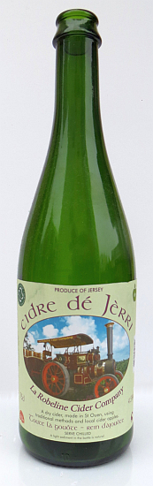

Fort Lauderdale, Florida,
U.S.A.
L'preunmyi d'avri, 1972
Moussieu l'Rédacteu,
"Tén articl'ye au sujet du Cri des Tomb'laines," mé dîsait un anmîn d'La Nouvelle Zélande dans ieune d'ses lettres, "mé rappelle du temps d'man Papa à St. Jean en Jèrri. Il 'tait un fèrmyi d'la vielle êcole, lé bouanhomme hardi hospitalyi, et i' faîsait la beinv'nue à tout l'monde, et j'm'èrsouveins d'aver ouï d's histouaithes tch'ont pathu dans les bulletîns d'L'Assembliée d'Jèrriais et dans tes articl'les dans la gâzette, et p't êt' d'autres tch'ont 'té oubliyées auve lé pâssage du temps. ches vielles histouaithes-là éthaient 'té oubliyées à tout janmais s'i' n'avaient pon 'té racontées dans les bulletîns, car les jannes d'à ch't heu n'sont pon întérêssis dans les vielles légendes.
"Y'avait un bieau grand ch'lyi à la fèrme siez Papa," m'disait m'n anmîn dans sa lettre, "et l'cidre 'tait-là pour tout l'monde tch'avait sé. Y'avait tréjous tchitch'un à mannier la chanteplieuthe 'Au c.. du tonneau', comme i' dîsent en France. Nou pouvait y vaie l'porteux d'lettres touos les jours, et l'bouochi et l'paîssonyi d'temps en temps - i' né v'naient pon touos les jours car y'avait tout pliein d'lard dans l'saleux - mais i' pathaîssaient aver sé quand i' pâssaient par siez Papa! Dans l'hiver, i' m'taient un pôkeur au feu, et quand il 'tait rouoge i' l'fouôrraient dans la modgie d'cidre pour l'êcaûffer. J'ai ouï dithe qué v'la tch'augmentait l'alcool dans l'cidre, mais jé n'sai pon si ch'est vrai.
"Les domestiques et vachièrs avaient lus bârrique à part dans l'ch'lyi. Les vachièrs 'taient Jèrriais et avaient 'té auve Papa d's années et il' avaient pèrmission d'en ouffri un vèrre à lus anmîns tch'étaient vachièrs dans les fèrmes du vaîsinné, au Dînmanche matîn. Tchiquesfais dans l'hiver, deux-s'trais d'ieux restaient jusqu'à l'heuthe du dîner et 'taient învités à mangi auve la fanmile. Y'avait tréjous eune bouanne bollée d'soupe dé lard et d'lédgeunmes - caboches, navets, cârottes, pânnais et pouothé. Auprès la soupe, des bouannes tranches dé lard salé, et patates et lédgeunmes à tathe-larigot. Et acouo du cidre dé la bouanne barrique à baithe! Papa en m'ttait en boutelle étout, et à l'occâsion, comme dans les temps d'Noué, il en dêhalait eune boutelle auprès dîner, et quand i' la dêbouchait, lé bouchon sautit tchiquesfais jusqu'au pliafond d'la tchuîsinne - ch'tait comme un coup d'arme! Auprès lé r'pas nou s'assiévait au pid du feu, et châtchun racontait sa p'tite sornette - ch'tait au chein tch'en savait l'pus!
"À ch't heu qu' j'y pense," mén anmîn continnuait dans sa lettre, "ch'tait les pus heutheurs jours dé la vie. Dans l'treizième chapitre dé St. Matchi i' nous est dit: 'Lé chein tch'a d's ouothelles pour ouï, tch'i' ouaie!" Eh bein, pour mé, ch'tait eune affaithe d'ouvri bouoche, s'ièrs et ouïes, car jé n'voulais pon pèrdre mème eune pathole dé chein qué l's anciens racontaient. Mais l'temps d'à ch't heu n'est pon l'temps pâssé, et les mousses dé nouos jours n'éthont janmais l'bonheu d'gouôter d'la vie d'chu temps-là."
En pâlant d'cidre, quand mes fréthes Fraînque et Percy 'taient auve mé en Jèrri y'a trais ou quatre ans j'allînmes vaie l'Sieur Ph'lippe David Le Cornu, lé grand marchand d'cidre à St. Jean - un charmant Moussieu - et i' nouos donnit eune fais à baithe dé san bouan cidre. Man bouanhomme! Ch'tait comme du champagne, sénon bein miyeu!
 Man fréthe Sydney, né en Jèrri, a héthité l'amour du cidre des Jèrriais, et dans l'vivant du Juge Francis Vibert Le Feuvre, Fraînque li jouit un fameux tou. Lé Juge gardait eune bârrique dé cidre tchoeuthu pour sén ûsage, et eune bârrique dé p'tit cidre pour les Brétons tch'étaient à dêfoui dans l'temps. J'tions siez li à Somerleight eune arlévée, et j'avions dit à Sydney qué l'Juge gardait du rare cidre et tch'i' pouôrrait s'en régaler. Assis à bailli d'nouot' becque, lé Juge dit à Fraînque: "Va don qu'si eune cannée d'cidre pour en ouffri eune modgie à Sydney!" Lé Fraînque né d'mandait pon mus, mais à la pliaiche d'emplyi la canne auve lé cidre tchoeuthu i' l'emplyit atout lé p'tit cidre! Sydney en avalit eune gorgie et, en faîsant des grîngnes, i' mînt san vèrre dé côté. Lé Juge lî dit: "Bon! Lé Fraînque m'avait dit qu' t'aimais l'cidre: tu n'as fait qué l'gouôter!" "Eh bein, il est aigre, vouot' cidre!", Sydney lî dit. "Aigre?" lé juge lî dit. "Vèrse m'en eune goutte dans chu vêrre ichîn, qué j'lé gouôte. Ah, man pend'loque!" i' dit à Fraînque, "ch'est du p'tit cidre dé d'dans la bârrique des Brétons qué tu li'as apporté!" "J'ai deu m'tromper d'bârrique!" Fraînque lî dit, en m'faîsant un clyîn. "Véthe," lé Juge lî dit, "tu t'est trompé à l'exprès, valet! J'té connaîssons bein - tu n'en chang'geas pon! Va nouos qu'si du tchoeuthu pour convier tan fréthe!"
Man fréthe Sydney, né en Jèrri, a héthité l'amour du cidre des Jèrriais, et dans l'vivant du Juge Francis Vibert Le Feuvre, Fraînque li jouit un fameux tou. Lé Juge gardait eune bârrique dé cidre tchoeuthu pour sén ûsage, et eune bârrique dé p'tit cidre pour les Brétons tch'étaient à dêfoui dans l'temps. J'tions siez li à Somerleight eune arlévée, et j'avions dit à Sydney qué l'Juge gardait du rare cidre et tch'i' pouôrrait s'en régaler. Assis à bailli d'nouot' becque, lé Juge dit à Fraînque: "Va don qu'si eune cannée d'cidre pour en ouffri eune modgie à Sydney!" Lé Fraînque né d'mandait pon mus, mais à la pliaiche d'emplyi la canne auve lé cidre tchoeuthu i' l'emplyit atout lé p'tit cidre! Sydney en avalit eune gorgie et, en faîsant des grîngnes, i' mînt san vèrre dé côté. Lé Juge lî dit: "Bon! Lé Fraînque m'avait dit qu' t'aimais l'cidre: tu n'as fait qué l'gouôter!" "Eh bein, il est aigre, vouot' cidre!", Sydney lî dit. "Aigre?" lé juge lî dit. "Vèrse m'en eune goutte dans chu vêrre ichîn, qué j'lé gouôte. Ah, man pend'loque!" i' dit à Fraînque, "ch'est du p'tit cidre dé d'dans la bârrique des Brétons qué tu li'as apporté!" "J'ai deu m'tromper d'bârrique!" Fraînque lî dit, en m'faîsant un clyîn. "Véthe," lé Juge lî dit, "tu t'est trompé à l'exprès, valet! J'té connaîssons bein - tu n'en chang'geas pon! Va nouos qu'si du tchoeuthu pour convier tan fréthe!"
George d'La Forge
Viyiz étout: